Remapping is assigning the bones of the hand asset within Hand Engine to drive the correct bones on the asset you are streaming hand data onto in another software.
IMPORTANT: This task will need to be completed prior to streaming hands to Unity using the Fidelity glove.
In order to remap the Hand Engine output to your custom character, you must first create an FBX that has just your target character in it and that character is in a full T-Pose that is saved at the first frame in the FBX.
The character must be in a full T-pose, with each hand in an L-Pose. The fingers of the character should align with a major axis of the scene/FBX.
Please note this FBX is used only for extracting bone hierarchy and rotation order data from your character. Once the remapping process is complete, you will be able to stream data from Hand Engine to any FBX/scene containing that character.
The key features for each hand pose are:
NOTE: The Hand Engine hand asset is set up using the metric system. Please ensure that your target FBX is set up with the same measurement system (working units in centimeters) to the software you are streaming.

Fingers are curled/in a relaxed position. This will cause the fingers to be over-rotated then creating a fist.
Fingers and thumb are correctly set, but the hand/arm is rotated relative to the major axis of the global scene. This will cause off-axis rotations of the fingers/thumb when curling them.
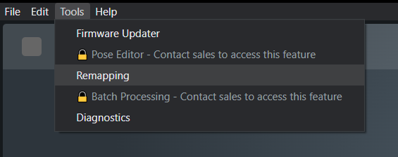


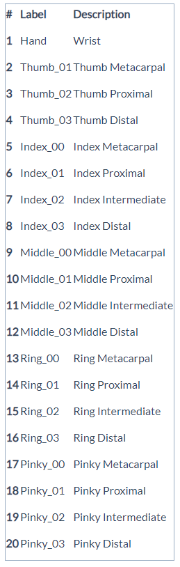
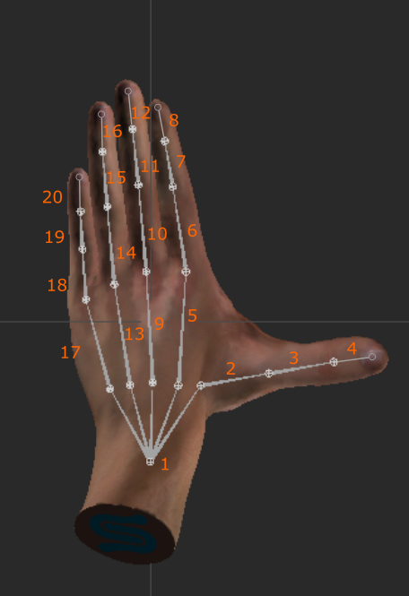
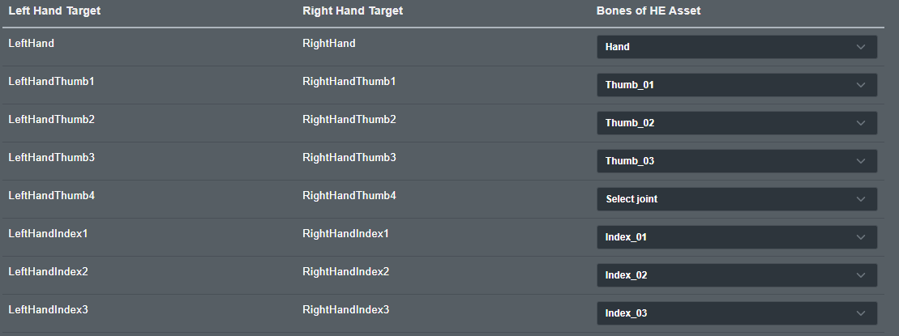


If you need to make any adjustments to this remapping, you can make the changes and click update at the bottom. It will overwrite the previous saved remap:
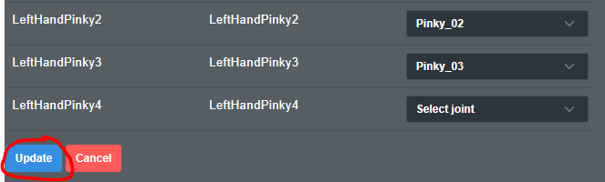

Download and Install Unity
NOTE: In this guide, we are using the Unity version 2022.3.7f1
Launch Unity Hub and create a new project
Select the 3D option from the templates window, then click Create
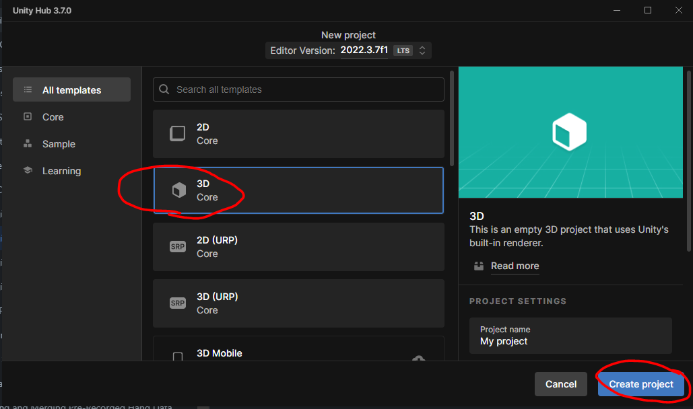
Once your project is created we will bring in the Hand Engine Plugin by right-clicking in the Project Assets Directory and selecting > Import Package > CustomPackage
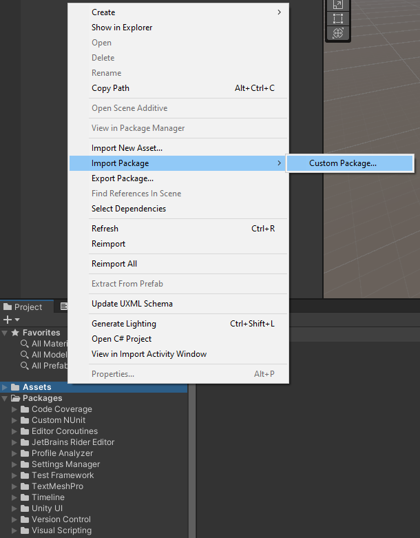
Select the HandEngineUnity_01.00.XX.unitypackage
NOTE: The most up-to-date Unity package can be found in the Plugins folder you downloaded from your StretchSense account.
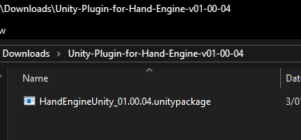
When prompted import all of the elements in the package
NOTE: this will replace the default SampleScene
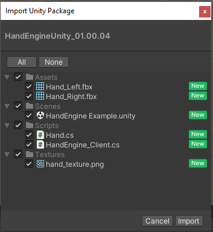
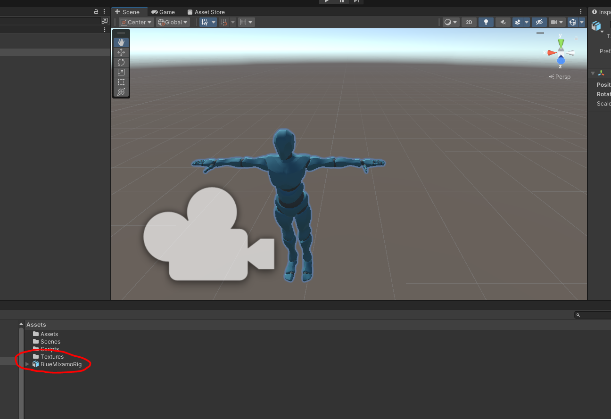
In the Hierarchy tab, expand your rig asset until you find the root bone asset of each hand.
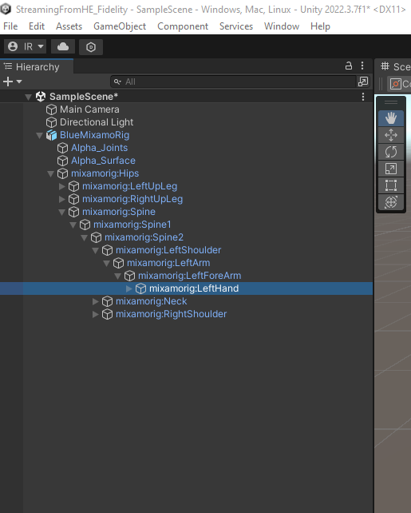
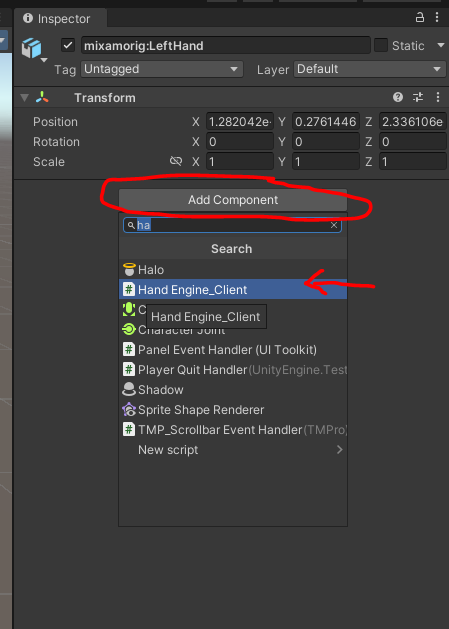
check the Host and Port settings match what you set in Hand Engine. You will have to check this for both hands.
NOTE: The default value for Host is 127.0.0.1 = localhost, i.e. you are running Hand Engine on the same PC that you are running Unity. If you have bound Hand Engine to a different IP address (e.g. if you are running Hand Engine and Unity on different computers on the same LAN), use this IP address instead for Host.
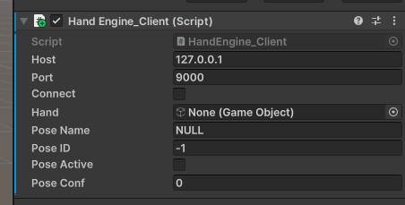
Please note: If you have calibrated the gloves via Advanced Calibration with keyed poses then the following fields will be populated:
Pose Name (pose being detected in Key Pose)
Pose ID (count from 0 increments for each different pose in order of when it was captured)
Note: Poses with the same name will have identical PoseID
Active state (Is snap activated/has pose passed threshold)
Pose confidence score (score of prediction)
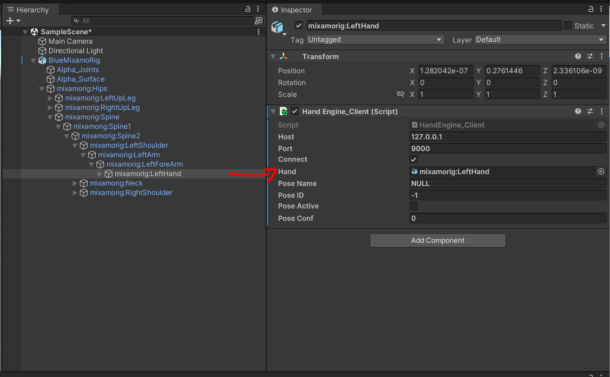
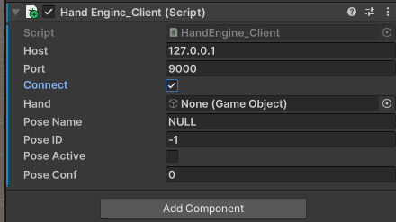
You can now use the hand controlled by your StretchSense MoCap Pro Glove in your Unity Project.
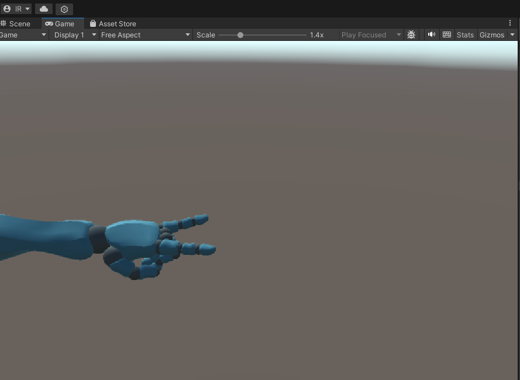